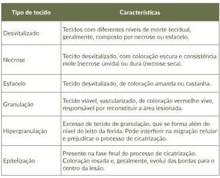

AVALIAÇÃO DA LESÃO
A avaliação de uma lesão deve levar em consideração diversos critérios, como listados na Figura.
Clique em cada um dos critérios apresentados.

Fonte: elaborado pela autora.
A avaliação de uma lesão deve levar em consideração diversos critérios, como listados na Figura.
Clique em cada um dos critérios apresentados.
Fonte: elaborado pela autora.
Etiologia
As principais etiologias que podem acarretar o surgimento de lesões já foram previamente abordadas, ressaltando-se a importância de se tratar corretamente as doenças de base associadas. Controlar a doença de base aumenta consideravelmente a chance de cicatrização das lesões.

Pele adjacente
A avaliação da pele adjacente deve incluir aspectos como cor, textura, temperatura, integridade, hidratação e presença ou não de prurido. Essa avaliação é importante para permitir a prevenção da abertura de novas lesões, auxiliando a avaliação de patologias como insuficiências venosa ou arterial, infecção e neuropatias periféricas.
Bordas
As bordas da lesão apresentam papel fundamental para a evolução do processo de cicatrização. O caminho natural da cicatrização ocorre das bordas em direção ao centro da ferida. Desse modo, essencial avaliar se estas se encontram íntegras, aderidas ou não ao leito, ressecadas ou maceradas, bem como sua espessura e coloração.
Exsudato
O exsudato é um fluido composto por células que se depositam nos tecidos ou nas superfícies teciduais, usualmente como resultado de um processo inflamatório ou infeccioso. Pode ser sanguinolento, serosanguinolento, seroso, seropurulento ou purulento.
Tipo de tecido
Ao avaliar a lesão, deve-se observar criteriosamente o tipo de tecido presente no seu leito. Esse parâmetro indica a fase de cicatrização em que a úlcera se encontra, bem como a melhor forma de tratamento. Diversos são os tipos de tecido que podem ser encontrados na lesão (Quadro 2).
Quadro 2. Tipos de tecido encontrados no leito de lesões ulceradas cutâneas ao longo das fases da cicatrização.

Fonte: Bernardes, 2020.
Sinais de infecção
A infecção é uma das principais causas associadas ao atraso da cicatrização. Pode prolongar a fase inflamatória e aumentar o tamanho lesão. Deve-se ressaltar que a lesão, por si só, é sempre colonizada por microrganismos, como bactérias, por exemplo. No entanto, com o aumento da carga microbiana, a colonização pode evoluir para contaminação ou até para uma infecção local ou sistêmica. Neste último caso, pode haver necessidade de antibioticoterapia tópica ou oral.
Dor
A dor é um dado subjetivo presente na maioria das lesões. Em geral, pacientes diabéticos sentem menos ou nenhuma dor, devido à neuropatia periférica. Já pacientes com os outros tipos de lesão sentem dor de moderada à intensa, principalmente no início do processo de cicatrização. A dor pode ser causada pela fase inflamatória, pela exposição de terminações nervosas e até em função de características psicológicas do paciente. Em casos de dor persistente e por tempo prolongado, deve-se buscar história regressa da lesão e doenças de base. A clínica da lesão também deve ser avaliada, observando-se sinais de inflamação ou infecção.